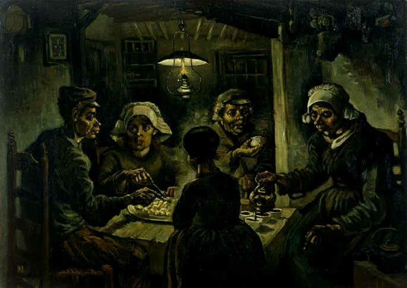
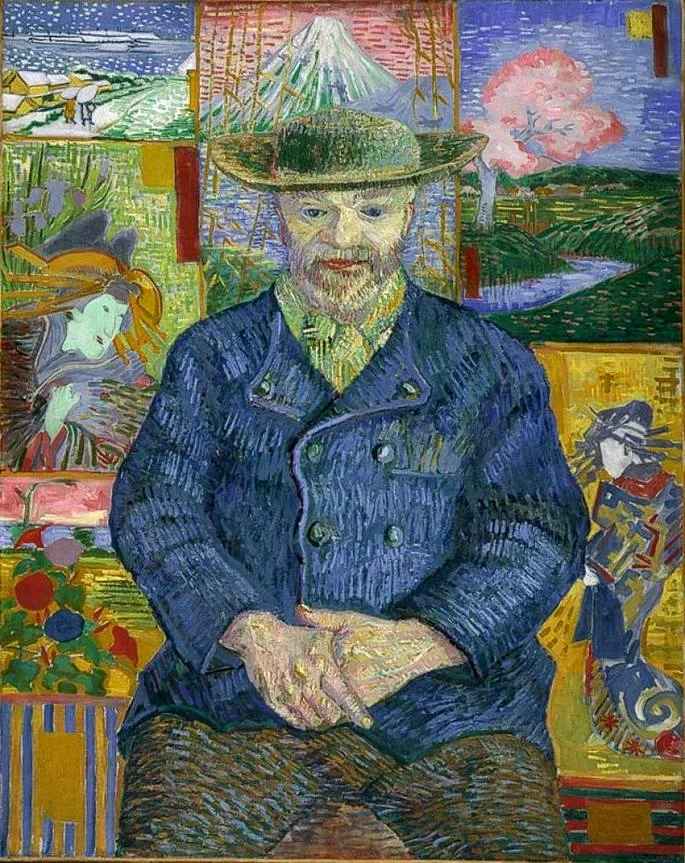
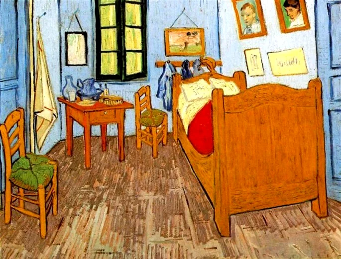
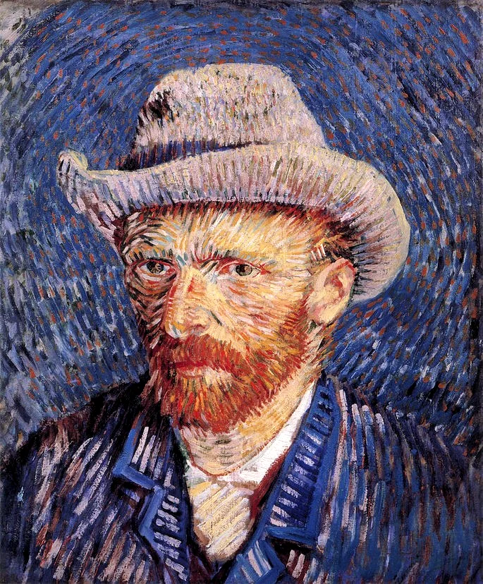
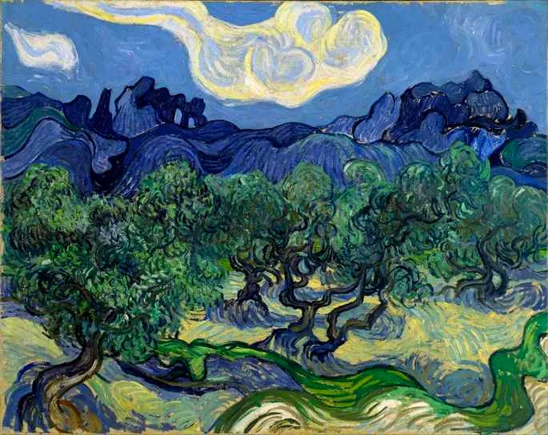
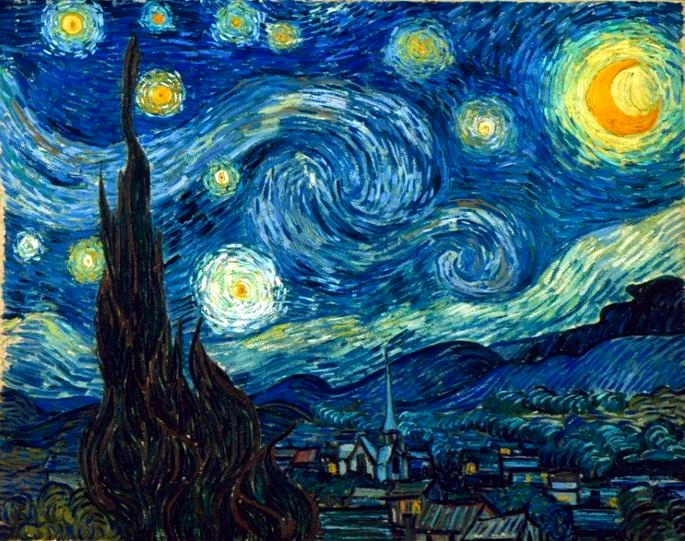
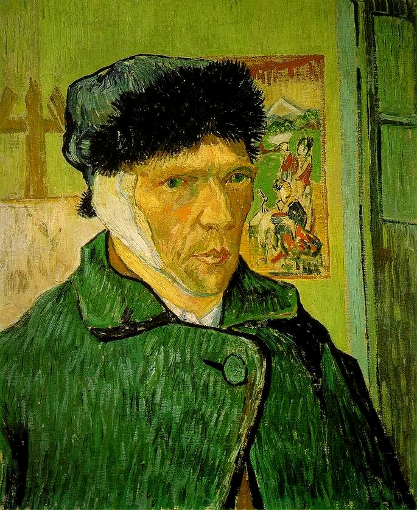
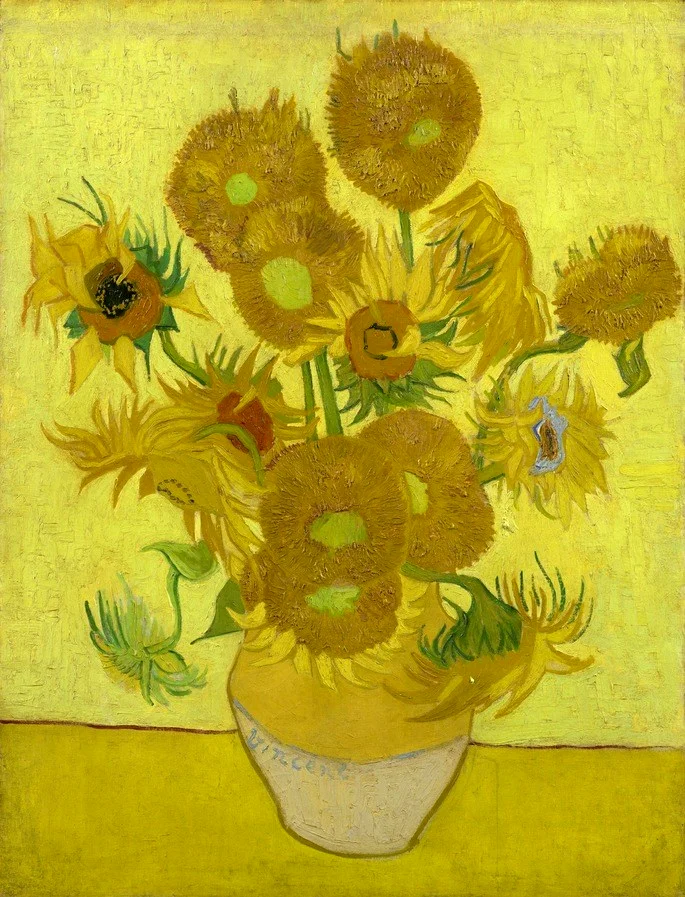
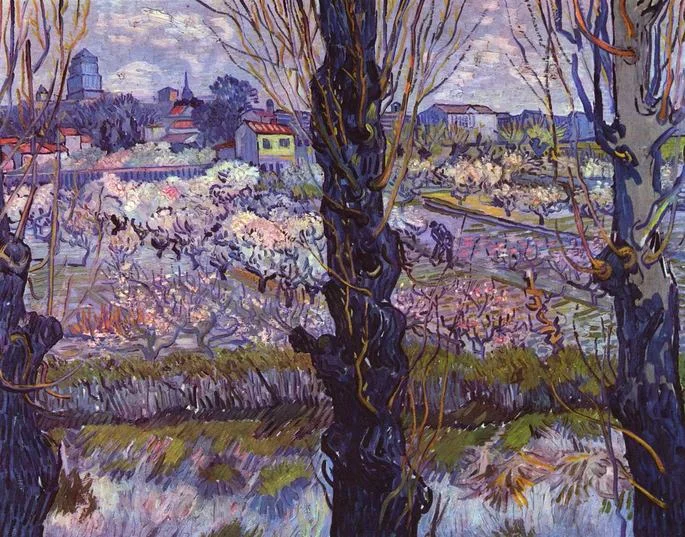
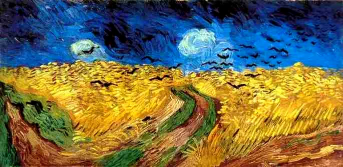

Suas Obras
Van Gogh pintou mais de 400 telas, onde retratou camponeses, a natureza, a miséria e fez autorretratos. Durante a vida, só realizou uma venda. Atualmente, suas obras estão entre as mais caras do mundo.
Os comedores de batatas (1885)

Caveira com cigarro acesso (1886)

Retrato de Père Tanguy (1887)

Quarto em Arles (1888)

Autorretrato com Chapéu de Palha (1888)

Oliveiras (1889)

A noite estrelada (1889)

Autorretrato com a orelha cortada (1889)

Os girassóis (1889)

Vista de Arles, pomar em flor (1889)

Campo de trigo com corvos (1890)
